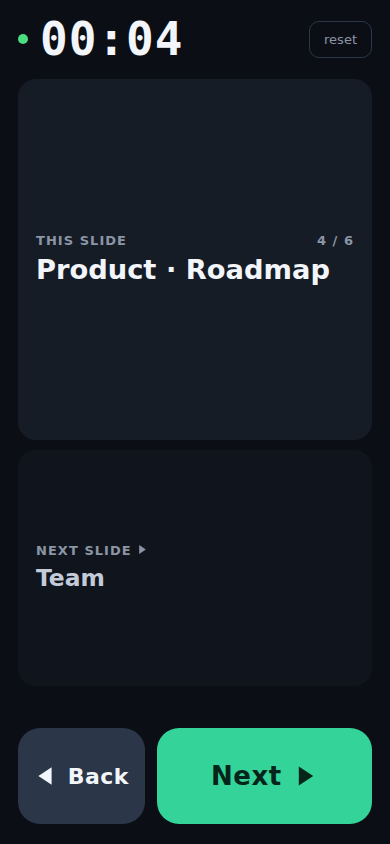

deck-remote turns any phone into a slide clicker for decks running in Chrome — with a talk timer, live slide descriptions, and true two-way sync.
Buttons send real key events to the Chrome tab. Advance from the laptop or a clicker instead, and the phone follows within a second.
Starts on your first press of Next, keeps counting across phone lock screens and reloads, resets when you want.
A local Gemma 4 E4B vision model (llama.cpp) reads each slide — text, charts and all — and answers with the most helpful 1–4 word description. The first word of the next slide is your heads-up. 100% on-device.
This is the actual interface, running against a simulated deck — press the buttons.
The real thing is served by the computer that runs your deck, so your phone never needs an app or an account: you scan a QR code printed in the terminal and you're connected.
The phone also shows your position in the deck (2 / 6), keeps its screen awake while presenting, and reconnects automatically if Wi‑Fi hiccups.

If you already have deck-remote running (or you're on a Tailscale/ZeroTier network), enter the computer's address to get a tappable link and QR for the remote.
# on the computer that shows the deck git clone https://github.com/diegoforni/deck-remote.git bash deck-remote/install.sh # one line: Node (if needed) + deps + OCR model cd deck-remote ./deck-remote --url ~/talks/my-deck.pdf # or --url docs.google.com
Full documentation, options (--pin, --port,
attaching to your own Chrome…) and troubleshooting are in the
README.
deck-remote attaches to the deck's tab over the Chrome DevTools protocol. Next/Back are real key events; transitions, embedded video and presenter view behave exactly as if you pressed the keyboard.
The tab is polled continuously — perceptual screenshot hashing for Google Slides, the PDF viewer's #page= URL for PDFs — so the phone stays in sync no matter how slides are advanced.
Each slide's frame goes to a local Gemma 4 E4B vision model served by llama.cpp. It reads the whole slide and answers with the most helpful 1–4 words — nothing is sent to the internet.
Browsers block insecure (ws://) WebSocket connections from HTTPS pages like this one,
so a web-hosted page cannot talk to deck-remote on your LAN. Serving the phone UI straight from
your computer also means zero configuration: scan the QR and you're connected, no accounts, no relay,
nothing leaves your network.
Installs Node.js LTS via nvm if it's missing (no sudo), reinstalls dependencies cleanly for your OS/arch, downloads llama.cpp and the Gemma 4 E4B vision model (~6.2 GB, one time, resumable), and smoke-tests the model. It's idempotent.
Yes — open the deck in presentation mode (Ctrl/⌘+F5). For private decks, sign into Google once in the window deck-remote launches. Arrow-key-driven HTML decks work too.
Yes — pass the file path: ./deck-remote --url ~/deck.pdf. Navigation uses the PDF viewer's page anchors; any zoom level works.
The remote is LAN-only and unauthenticated by default; run it with --pin 1234 on shared networks. Slide frames never leave your machine — the AI runs locally.